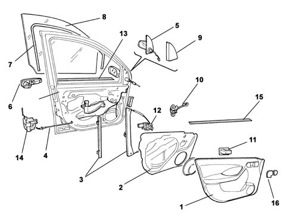

Introduction - PASSENGER COMPARTMENT FRONT SIDE DOORS
- Path
- Descriptions > 70 FITTINGS > 7005 PASSENGER COMPARTMENT FRONT SIDE DOORS > Introduction - PASSENGER COMPARTMENT FRONT SIDE DOORS
- Kind
- system description
- Applies to
- all engines; all production periods
- Interactive page
- https://sloeber94.github.io/elrnDB-fPnd/en/#/2753487
Applies to: all engines; all production periods
The front doors have been designed with the structure and the panels not featuring any corners to reduce the risk of injury to the occupants.
The locks and control levers are protected against break ins by a shield which prevents access to the mechanisms from the outside. The safety lock is activated, from inside the vehicle, by means of a knob on the driver's door.
The side panel features an arm-rest made directly out of the panel and an oddments pocket in the lower section. The functional parts are arranged to ensure correct interaction with the occupant's body in the case of side impact.
They are soft and smooth in the top section, whilst the protrusion of the armrest is made harmless by the fact that it collapses and presents no risk of injury to the abdomen.
The door features the conventional closed structure which, in addition to performing the structural function, acts as support for the electric window motor, the relevant guides and various wiring.
The following are located on the interior door trim panel:
- opening/closing handle;
- internal door lever;
- oddments pocket;
- manual door mirror adjustment device (for versions with no electrical device)
- loudspeaker;
The sliding glass is made from thermal glass and is moved by means of a mechanism with a guided cable.
The trim on the upper profile of the door, by the glass, and the glass scraper trims, ensure a perfect seal and the absence of aerodynamic wind noise.
Applies to: all engines; all production periods
COMPOSITION
Exploded view of front door

1 - Door inner panel 2 - Interior trim 3 - Electric window guides 4 - Opening mechanism Bowden cable 5 - Rear view mirror 6 - Exterior door opening handle 7 - Seal 8 - Window 9 - Mirror trim on door interior 10 - Door check strap 11 - Door interior opening handle 12 - Electric window motor 1 - Exterior glass scraper 14 - Lock 15 - Internal glass scraper 16 - Trim on internal door handle